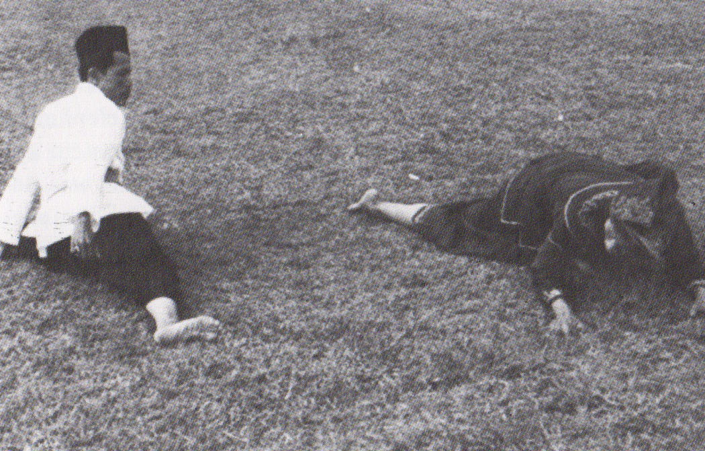
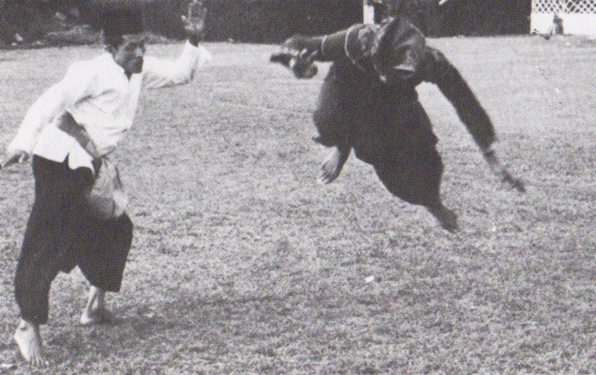
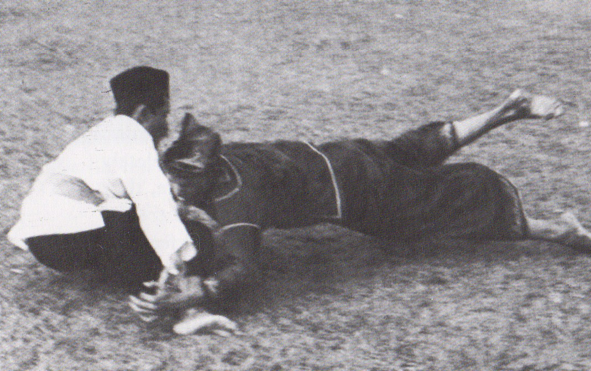
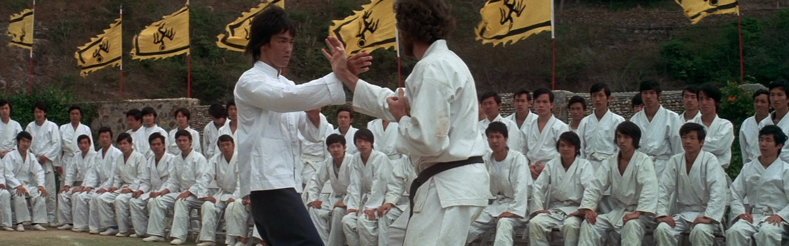
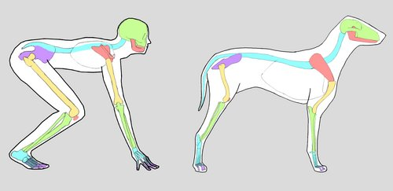
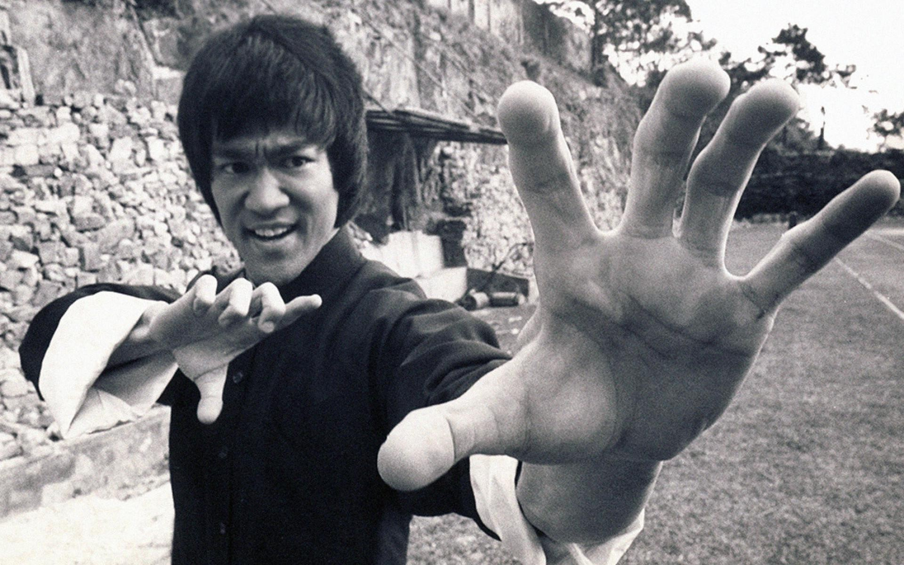

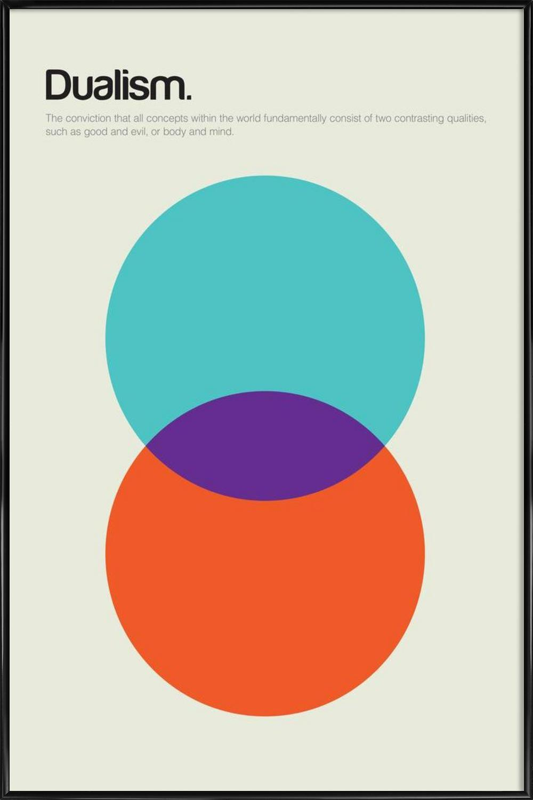
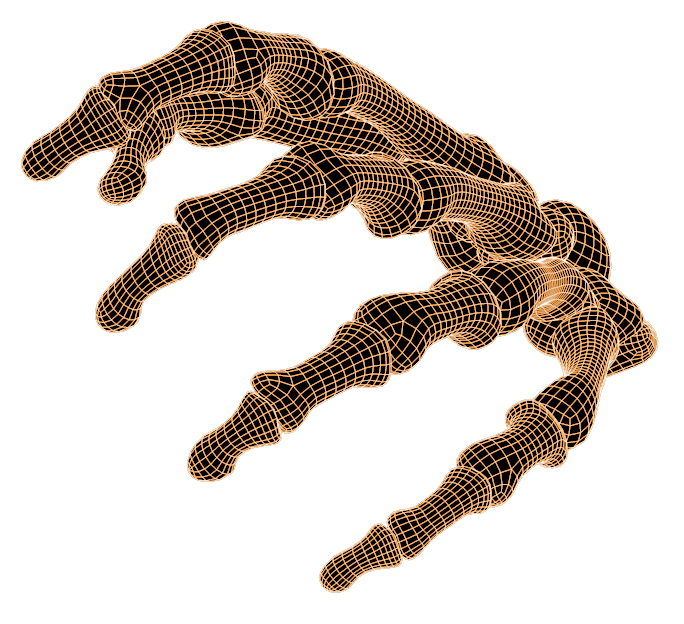
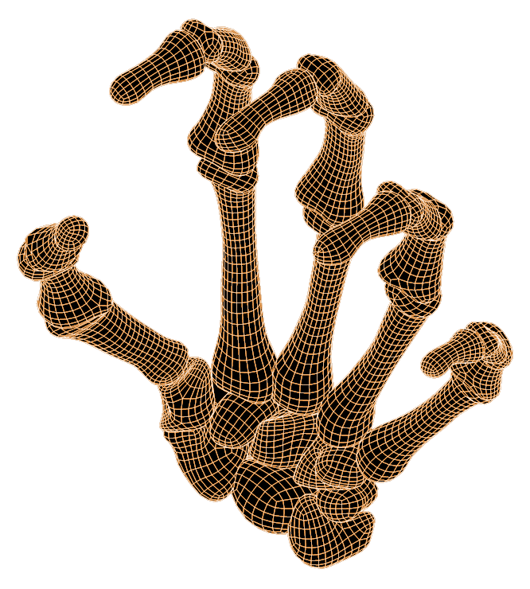
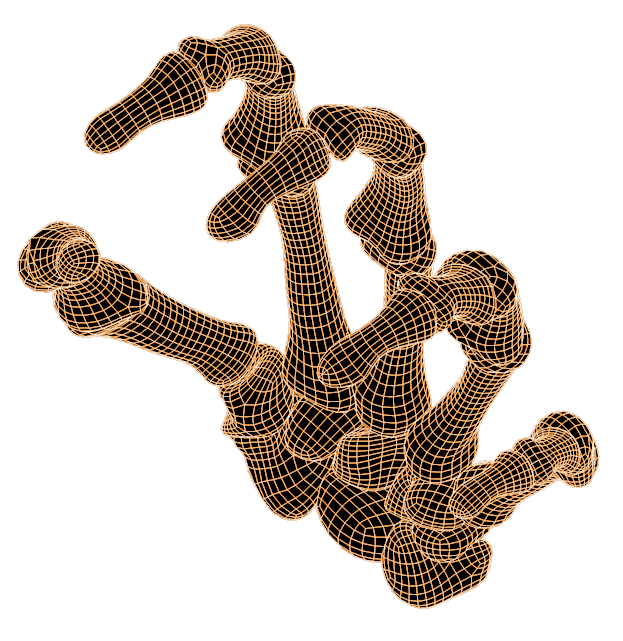
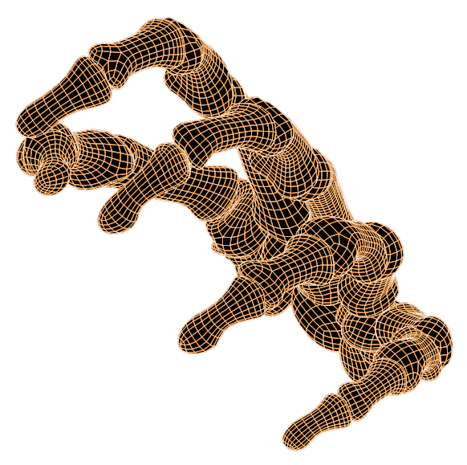
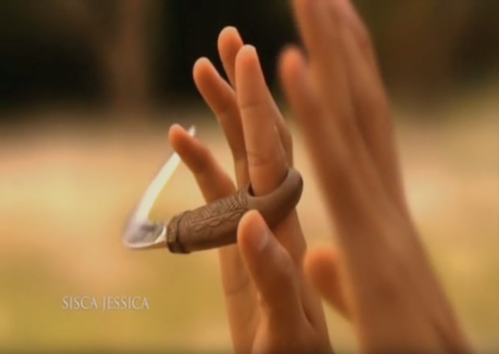

About eight years ago I went to Indonesia with a group of my silat school. We stayed there for a couple of weeks, and in those weeks we trained everyday. The lessons with our big group and the group from the school there, started each day the same. We greet each other. Then everybody had to sit down, close their eyes and listen to the teacher, who was saying the Satria Muda Indonesia (SMI) promise out loud. And then the lesson will start.
Of course the first few days were all about getting to know each other and trying to understand what the teacher meant with his jurus1 and lessons. He showed the movement once or twice and then let us practice it. He didn’t correct us, walked around and was looking at how we’re moving. At some point he did start to correct me, explaining what the movement all was about. And after a couple of days me and my training-partner had to train two times a day. While the others only could train in the evening with the rest. That went on until the day we had to get back to the Netherlands.
For me, this short period in which I got to learn so much techniques worked out very well. I enjoyed the way of teaching. But when I think back, it didn’t work out so well for the rest. He didn’t criticise their techniques as must as he did with me and my training-partner. He let them practice the same jurus over and over again. And at some point some people of our group started to ‘miss’ classes. Which is, in my eyes, disrespectful towards the teacher. So when they did came back to train, he was following the promise of SMI: you will follow the training with discipline & the knowledge gained will only be taught back to those who are entitled. So he didn’t teach them but let his assistant help them. In his eyes they were not entitled to learn his techniques, because of the lack of respect and discipline. But from their perspective it’s understandable, in their eyes the teacher didn’t pay enough attention to them.
I tried his way of teaching here in the Netherlands with some of the children/students I teach, and have seen that sometimes the same thing happens as in Indonesia. The children/students did not have a ‘goal’ to train too. It made me realise that both views/mindsets have their flaws. What flaws? The students are thrown in the deep by the teacher. Which is okay, if there is clear guidance. But he expects that the students find the answers to their questions by practicing the movement x amount of times. While students think they are doing the exercise correct, because they don’t get critique on the way they perform, the teacher doesn’t find them ready enough to continue to the next step/technique. That’s why in Asia it could take years even decades to obtain the black belt. I think it is okay if you “find the answers” by practicing non-stop, but at some point you do need to get guidance on what you are doing. (It should be taught in such a way that it’s useful in all things.) 2
So how can we combine those two mindsets as one, in a way that works best for you? Not only for training a martial art or other sport, but more importantly for your daily life and especially for your work as a designer/artist. That in the end this mindset is repeated so many times (subconsciously & consciously), like the movements, you’ll have balanced your mind. We master the technical aspects of an art form only by learning the rules and the ways that people have done things in the past. It takes a great deal of flexibility of mind to then question these rules, to push on them, and to break free from the influence of one's teachers.(This goes for both pencak silat and graphic design)
At the first stage, you must burden yourself with a long and careful study. That will lead to a technical mastery of Pencak Silat and the tradition of it. I can hear you think: “what on earth is pencak silat?!”, well let me (shortly) explain it for you. It all starts with a story that is passed on from village to village.
Legend says that a woman witnessed a fight between a tiger and a large bird. Fascinated by the fight she kept on watching until the animals both found their dead. Returning to her home she was met with her husband, who was mad at her for staying away for so long. As punishment the husband tried to punch her, but before he even could touch her, the woman dodged the punch. The husband tried to hurt her again, but this time she was able to fend off the attack by using the animals’ movement she has seen that day. The husband, who was dumbstruck by the movements of his wife, asked her to teach him. She did and so the knowledge of pencak silat slowly spread village by village. As a country surrounded by dangerous forests and various wild animals, the inhabitants of Indonesia, like this woman, accustomed to protect themselves from nature and humans. It is believed that pencak silat, and many interpretations of this and other stories, originated around the 11th century AD and spread to Sumatra from different regions throughout Southeast Asia (including China).
Even though practising pencak silat is done for many centuries, the word itself is a new creation. A possible source derived from Chinese Shantung mandarin: pung-cha. Pung means “to parry and cover an attacking action” while cha implies “to finalise by striking action”. But the word Pencak silat was first chosen in Indonesia as a unifying term for indigenous martial arts in 1948 at the inaugural congress of the Indonesian Pencak Silat Association. Before that, pencak silat was known under different regional names such as mancak (Bali), pencak (Central and East Java) and Silek (West-Sumatra).
The people in West-Sumatra are called MinangKabau. Like any other region the MinangKabau has it own legend, told in many variations. The people say that the name “MinangKabau” derives from a territorial conflict between an invading prince and the local West-Sumatran inhabitants. Where both parties settled for a fight to the death between two buffalos (Kabau). The prince trained a large, aggressive buffalo, the villagers found a young calf. The calf had small sharp horns and didn’t get any food. When the fight began the calf stormed at the buffalo, searching for food, the small sharp horns opened up the belly and killed the bigger buffalo. The villagers were victorious. Hence comes the name MinangKabau, meaning the winning buffalo. The villagers used wisdom and strategy to avoid war with the prince. The MinangKabau people have their own dialect of Bahasa Indonesia and thus also their own connotation of the word pencak silat. Where pencak “skillful body movements in variations for self-defence” means. And silat is known as “fighting application of pencak”. Other definition exists, but all agree that silat cannot exist without pencak; pencak without silat is purposeless.2
Within the MinangKabau style lies another. Silek Harimau is a branch of pencak silat that is inspired by the majestic Sumatran tiger. Silek is the MinangKabau word for Silat, the word harimau means, in both Bahasa Indonesia and in the MinangKabau language, tiger. Practitioners of Silek Harimau look at the tiger as an animal capable of destroying it’s opponent while still keeping it’s gracefulness.5